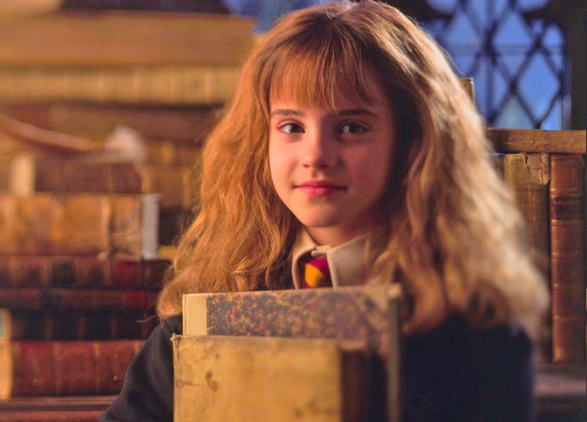
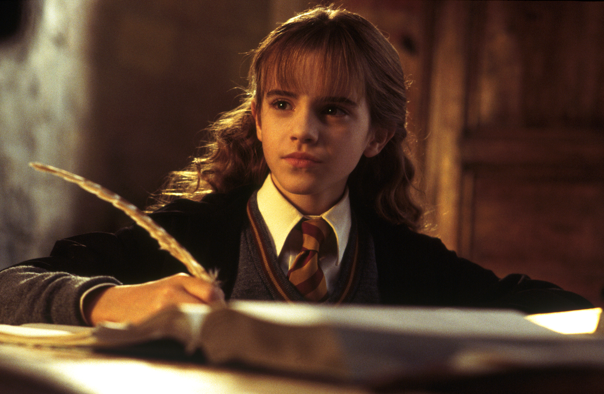
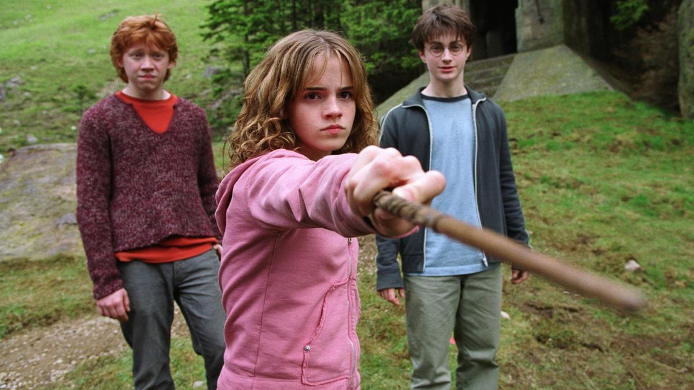
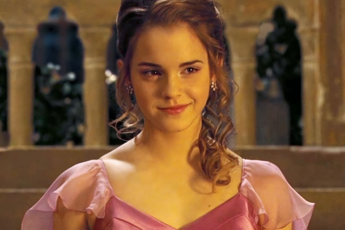
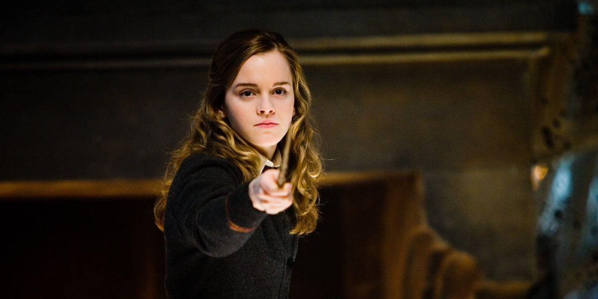
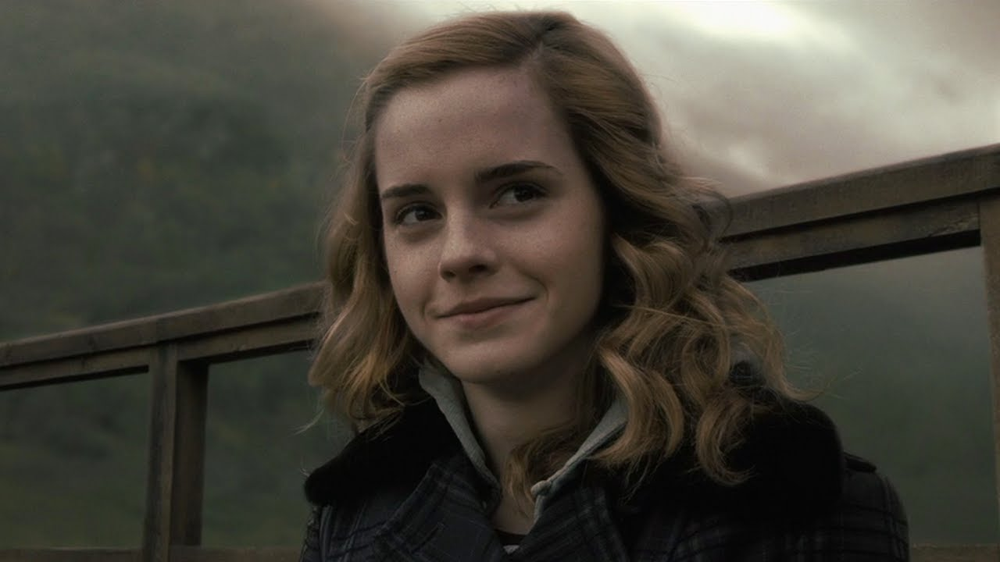

Crecimiento del Personaje en las Películas

Harry Potter y la piedra filosofal
"Ahora, yo me voy a la cama antes de que a alguno de los dos se le ocurra otra genial idea y acabemos muertos. O, peor, expulsados."

Harry Potter y la cámara secreta
"Al menos nadie en el equipo de Gryffindor tuvo que comprar su pase. Lo obtuvieron por puro talento"

Harry Potter y el prisionero de Azkaban
"¡Tú, asquerosa, sucia y falsa cucaracha!"

Harry Potter y el cáliz de fuego
"¡La próxima vez que haya un baile ten el valor de pedírmelo antes de que lo haga otro, no como último recurso!"

Harry Potter y la orden del fénix
"Tienes la capacidad emocional de un ladrillo."

Harry Potter y el misterio del príncipe
"No, Harry, tú escucha. Iremos contigo. Eso se decidió meses atrás, años en realidad."

Harry Potter y las reliquias de la muerte
"Soy sangre sucia y a mucha honra."